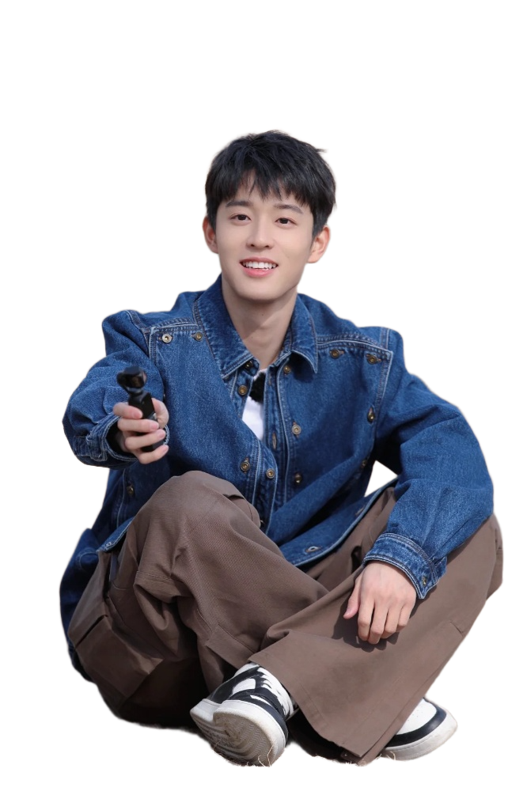
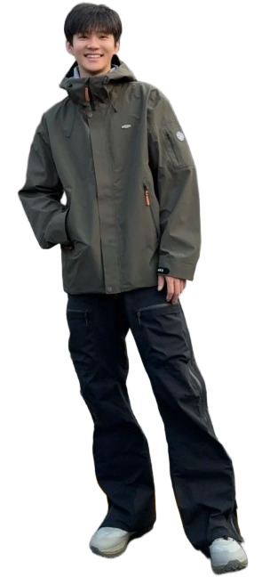

LUGUANGDUO,TITLE
王敬轩:
- 家庭定位：“一家之主”，团队的控场者。
-
特点：幽默风趣，很会控场，总能在关键时刻引领节目的节奏。同时，他还是一位古风歌手，多才多艺。
-
节目中的表现：王敬轩在节目中不仅负责调节气氛，还经常以其独特的幽默感和才华，为观众带来惊喜和欢笑

沈月:
- 家庭定位：节目的核心人物，元气满满的女生。
-
特点：接梗抛梗游刃有余，是团队中的灵魂人物，以其独特的魅力和亲和力，为观众带来无尽的欢乐。她不仅活力四射，还展现了出色的综艺感和团队协作能力
-
节目中的表现：沈月在节目中经常自然而然地迸发出一些梗，制造节目笑点，与其他嘉宾相处得十分融洽

吴宇恒：
- 家庭定位：呆萌可爱的团宠。
-
特点：懵懂纯真，为团队增添了不少乐趣。他的呆萌形象深受观众喜爱，是节目中的一大亮点。
-
节目中的表现：吴宇恒在与其他嘉宾的互动中，总是能展现出他独特的魅力和亲和力，让观众对他爱不释手

周彦辰：
- 角色定位：成熟稳重的弟弟。
-
特点：冷静睿智，言辞犀利。他的存在为节目增添了一份稳重和深度，是团队中不可或缺的一员。
-
节目中的表现：周彦辰在节目中总是能以其冷静的头脑和睿智的言辞，为团队解决各种难题，同时也为观众带来了不少思考和启示
